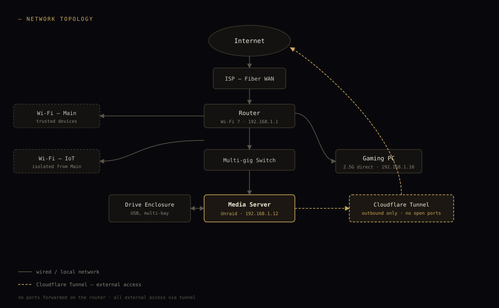
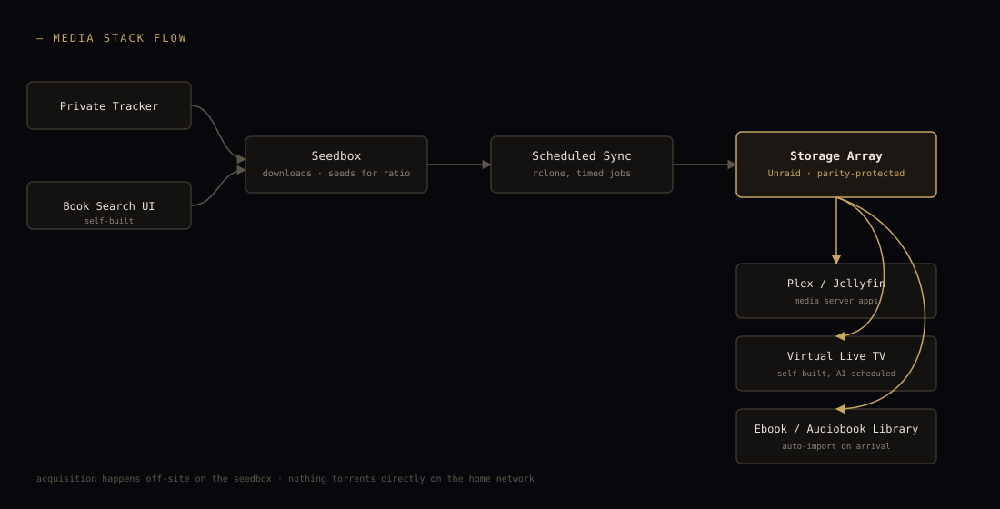

Homelab
A snapshot of what's currently running at home. Media server, book pipeline, monitoring, home automation, and a handful of self-built tools, all running on a small self-hosted server behind a reverse proxy and tunnel — no ports opened to the internet.
Network Topology

scroll the diagram sideways to read it →
Hardware
Primary workstation for development and gaming
A mini PC running Unraid, hosting the docker stack below
A multi-bay USB enclosure with drives of varying sizes, connected to the media server
Wi-Fi 7 router and a multi-gigabit switch connecting everything
Key Decisions
Everything routes through a Cloudflare Tunnel rather than forwarded ports — no inbound holes in the firewall, and it works the same whether at home or traveling. Storage runs on Unraid with parity protection, so any single drive can fail without losing data. Media, photos, and files are self-hosted (Immich, Nextcloud, Plex/Jellyfin) instead of paying for cloud storage subscriptions. Network-wide DNS filtering through AdGuard Home blocks ads and trackers for every device on the network, not just the ones with an extension installed.
Media Stack Flow

scroll the diagram sideways to read it →
Services
| Service | Purpose |
|---|---|
| Media | |
| Plex / Jellyfin | Media server (running in parallel) |
| Tautulli | Playback monitoring for Plex |
| Tunarr + SmarTunarr | Self-built virtual live TV channels, AI-generated scheduling |
| Music | |
| Navidrome | Self-hosted music streaming |
| YTPlayer | Self-built music player, custom auth |
| Books | |
| Calibre-Web Automated | Ebook library with auto-import pipeline |
| Audiobookshelf | Audiobook server |
| Shelfmark | Book search and acquisition |
| Genealogy | |
| Webtrees | Self-hosted family tree |
| Photos & Files | |
| Immich | Photo/video library, mobile backup |
| Nextcloud | File storage and sync |
| Finance | |
| LedgerView | Self-built personal finance dashboard |
| Utilities | |
| Roundup | Self-built shared list PWA |
| IT-Tools / OmniTools | Developer and general utility toolkits |
| Home | |
| Home Assistant | Smart home automation platform |
| Games | |
| RomM | Retro game library manager |
| Infra | |
| AdGuard Home | Network-wide DNS filtering |
| Caddy | Reverse proxy, internal HTTPS |
| Cloudflare Tunnel | External access, no open ports |
| Uptime Kuma / Glance / Beszel / Dozzle | Monitoring, dashboards, logs |
| AI Tooling | |
| MCP servers | AI-assisted access to vault and homelab tools, OAuth 2.0 + PKCE |